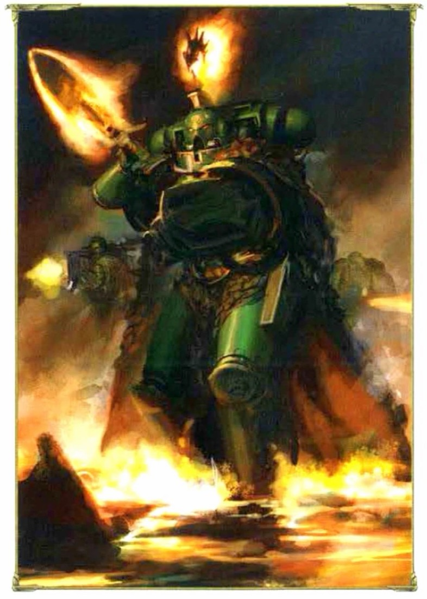

Salamanders
| Salamanders XVIII Legion · Dragon Warriors | |
|---|---|
Badge of the Salamanders: the horned head of a Nocturnean salamander Artwork © Games Workshop | |
| Founding | First Founding, c. 700.M30[a] |
| Legion number | XVIII |
| Primarch | Vulkan (found 832.M30; missing) |
| Chapter Master | Tu'Shan, Regent of Prometheus |
| Forgefather | Vulkan He'stan |
| Homeworld | Nocturne, Ultima Segmentum |
| Fortress | Fortress-monastery on Prometheus, the moon of Nocturne |
| Allegiance | Loyalist, Imperium of Mankind |
| Colours | Green, black and gold |
| Battle cry | "Into the fires of battle, unto the Anvil of War!" |
| Organisation | Six full companies of 120 warriors, a Scout company, seven warrior-houses |
| Successor Chapters | None from the Second Founding; later descent claimed for the Beacons of Maar, Black Dragons, Black Vipers, Covenant of Fire, Dark Krakens, Dragonspears, Drakes Radiant, Hammers of Nocturne, Iron Drakes and Storm Giants |
| Notable battles | |
| Drop Site Massacre of Isstvan V; the War of Flames (M36); the War of the Beast; Third War for Armageddon | |
| Notable members | |
| Vulkan, Artellus Numeon, T'kell, Vulkan He'stan, Tu'Shan | |
The Salamanders, in their first age the XVIIIth Legion and for a time the Dragon Warriors, are a loyalist Space Marine Chapter and one of the original Space Marine Legions. Their homeworld is the volcanic death world of Nocturne. They are known for their blackened skin and ember-red eyes, for their skill as smiths and for a Promethean creed that places the protection of ordinary human beings above almost every other duty. The Salamanders are unusual among the Adeptus Astartes in that their battle-brothers keep in contact with their families and with the people of Nocturne. They are at ease in the company of mortals in a way that other Chapters are not, and they fight to protect the innocent whenever and wherever they can.[1]
The Salamanders were among the Loyalist Legions that were first at the Drop Site Massacre on Isstvan V, and they suffered terribly. Their primarch Vulkan was captured and tormented by Konrad Curze, escaped, and was believed to have died. Out of that catastrophe came the Legion's fixation with endurance: the idea that men are tested by fire as metal is on the anvil. The Salamanders are the one First Founding Legion that was not divided into Chapters at the Second Founding, because there were too few of them left. Vulkan himself disappeared long after the Heresy, leaving behind a testament, the Tome of Fire, that names nine relics he hid for his sons to find.[2]
History
[edit]The Dragon Warriors
[edit]Few records survive of the Legion's earliest days. It was raised in the last years of the Unification Wars, and the earliest recorded battle honour is the Assault of the Tempest Galleries, in the overthrow of the Ethnarch of the Caucasus Wastes on Terra. The Legion's first Legion Commander was Cassian Vaughn, and it was composed of Terran warriors. Its primarch was missing, and the Legion was committed to a series of campaigns in the early Great Crusade under the name of Dragon Warriors. Many of its warriors died, and the survivors learned to rely only on themselves. The Legion's character as a company of the unlucky and tough dates from these years.[2]
Vulkan and the Emperor's contest
[edit]
The primarch was found on Nocturne, a death world rent by tides caused by its great moon Prometheus. Its people, who lived in the sanctuary cities beneath the volcanic crust, had been prey to monsters and to slavers, and Vulkan had made himself their protector. He defeated a Drukhari raid and was celebrated with a tournament of strength and craft. In 832.M30 a stranger came and asked to compete. The stranger wagered his loyalty against that of Vulkan and matched him blow for blow through eight days. In the last trial each forged a weapon and hunted the largest of the horned salamanders, the Fire Drakes of Mount Deathfire. When a volcanic eruption threw Vulkan over a cliff edge, the stranger rescued him by using the hide of his own kill as a bridge across the lava. Vulkan knelt, saying that any man who valued a life over pride had earned his service. Only then did the stranger reveal that he was the Emperor.[2]
Vulkan took command of the Legion some years later, in about 835–840.M30,[a] and reorganised it into seven realms under lord protectors, with line companies of about 120 warriors, and taught it the Promethean creed of honour, self-sacrifice, self-reliance and brotherhood. His one condition was that Nocturne not be left defenceless. The Legion was assigned to the 154th Expeditionary Fleet with regiments of the Imperial Army raised on the death world of Phaeria, and brought hundreds of worlds into Compliance. At Caldera, designated 154-4 and called Ibsen by its inhabitants, in about 001.M31,[a] the Salamanders, Iron Hands and Death Guard defeated a garrison of Aeldari that was defending a network of standing stones. The Legion's flagship was the battleship Flamewrought.[2]
Horus Heresy
[edit]The Salamanders were in the first wave on Isstvan V in 006.M31, hitting the left flank of the Traitor lines while the Raven Guard struck the right and Ferrus Manus and his Morlocks went up the centre. When the second wave opened fire on its allies, the Salamanders had already lost a large part of their strength; and the orbital bombardment by the Iron Warriors destroyed most of the rest. Vulkan lived through the strike, was overwhelmed by Night Lords and Iron Warriors, and was taken prisoner aboard a gaol-hulk belonging to the VIIIth Legion.[3]
There Konrad Curze set out to break him. Vulkan could not be killed: each wound closed and each death was undone, for he was a Perpetual, a being of unending regeneration like his father. Curze beheaded him, burned him and shot him, cast him out of an airlock and tormented him with illusions raised by the sorcerer-priests of Davin. Finally he set him in a labyrinth built in imitation of the Iron Warriors' prison, and placed Vulkan's hammer Dawnbringer at its centre. Vulkan mocked Curze until he came down, took the hammer, and teleported by the device in its head across the galaxy. He fell burning through the sky of Macragge in about 009.M31 and was believed dead. Curze followed him, and the fight that followed on Macragge was ended by the intervention of the mysterious Perpetual John Grammaticus, who stabbed Vulkan in the heart with a splinter of fulgurite.[3]
The Salamanders who escaped to Macragge, and who had mourned their primarch, formed a small brotherhood, the Pyre, under their First Captain, Artellus Numeon, whose cry was "Vulkan lives!" The Pyre took Vulkan's body aboard the Charybdis, broke through the Ruinstorm and brought it to Nocturne, where the Death Guard and Word Bearers followed. The Charybdis was lost, but Numeon and twenty survivors reached the surface and the Draconis Gate bastion, and the Death Guard were destroyed. Vulkan was then laid in the caldera of Mount Deathfire with the spear still in his chest. Numeon, alone, went in after him in an act of pure faith. Three Salamanders who went to find Numeon met a figure kneeling in the ash, with the fulgurite tip still in his chest. It was the primarch. Vulkan was alive.[3]
Great Scouring and the Second Founding
[edit]Vulkan supported Rogal Dorn and Leman Russ in opposing the division of the Legions in about 021.M31, and yielded when the unity of the Imperium was threatened. Roboute Guilliman exempted the Salamanders, who numbered too few to divide. They are the one Legion that has remained a single body with a single name, and they adopted the Codex Astartes in all but the form of their companies. They kept the seven warrior-houses of the original Legion as seven main companies, each rooted in one of the sanctuary cities of Nocturne, together with a Scout company that lives in the mountains.[2]
The long millennia
[edit]The Salamanders' care for civilians has often brought them into conflict with the Imperium's zealots. In M36, in the Age of Apostasy, the tyrant Goge Vandire's Arch-Cardinal Perigno declared the Promethean Cult heretical. Five companies were hunted on New Folly by three orders of the Adepta Sororitas in the War of Flames, and survived. In 544–546.M32 the Chapter fought in the War of the Beast. Salamander tradition and the Black Templars' records say that Vulkan himself returned to the field, wielding a thunder hammer, Doomtremor, against the Ork warlord's hosts. The tradition says that Vulkan afterwards led the Chapter for up to three thousand years and then departed on a mission he did not declare. Imperial records of this period are thin, and some scholars hold that the primarch's second disappearance happened much earlier.[2][4]
More than a thousand years after the Heresy, according to the Tome of Fire, Vulkan hid nine artefacts of his own making in the galaxy. Five are now recovered: the Spear of Vulkan, Kesare's Mantle and the Gauntlet of the Forge are carried by the Forgefather, Vulkan He'stan, and the Chalice of Fire and the Eye of Vulkan lie in the fortress-monastery. The Engine of Woes, the Obsidian Chariot, the Unbound Flame and the Song of Entropy have not been found. The Chapter believes that when its Forgefather has them all, Vulkan will judge his sons sufficiently tempered and return to lead them in the final war.[2]
Era Indomitus
[edit]Chapter Master Tu'Shan, Regent of Prometheus, took part in the Third War for Armageddon in 998.M41, where the Salamanders gained fame defending refugee columns. After the opening of the Great Rift the Chapter has served as a shield for the weak, taking some of the worst of the fighting. In the Largos System it broke the blood-factories of a Bloodthirster and its Rage Legion. Its dependence on a single world for recruits and its stubbornness have left it slow to replace losses, a strain made worse by its selflessness. Primaris Space Marines of the Indomitus Crusade have been absorbed, and the Chapter's accounts say it will emerge from the fire, as always, stronger.[5]
Organisation
[edit]The Legion's command was divided between the lord protectors of its seven realms. The Legion Forge Lord, an officer unique to the Legion, was the senior Techmarine and commanded its tank formations; T'kell held the post during the Heresy. The Pyre Guard, the primarch's household guard, was led by Artellus Numeon. The First Company were the Fire Drakes.[2]
The Chapter has six companies of full Space Marines, each of 120 rather than the 100 prescribed by the Codex, and a Scout company of about sixty. The first company, the Firedrakes, is barracked on Prometheus, and is led by the Chapter Master. The other six are based in the sanctuary cities of Nocturne. The Chapter employs more Techmarines than is usual and more Terminators and master-crafted weapons.[1]
Homeworld and fortress
[edit]Nocturne is a death world and feudal society whose volcano chains and violent tides are the product of the pull of Prometheus. Seven sanctuary cities, built deep into bedrock on the sites of the ancient kings' settlements, are the base of the Chapter's recruitment. A Vault of Remembrance in each sanctuary city holds the memorials of the fallen. The Chapter's fortress-monastery is on Prometheus, which is little more than a spaceport and a dock; its inner sanctum, the Pantheon, is closed to ordinary battle-brothers. Mount Deathfire, in the Pyre Desert, is the home of the Fire Drakes and the place of the last trial for aspirants.[2]
Children of Nocturne who wish to join begin training at six or seven as apprentices to a Salamander, spend years learning the smith's craft, and are tested at Deathfire.[1]
Combat doctrine
[edit]The Salamanders follow the Codex Astartes with slight variations. They prefer to fight at close range, with flamers and meltas to burn infantry and crack armour. Because every battle-brother can repair, service and modify his own arms and armour, the Techmarines are free to craft artificer wargear of high quality. Vulkan preferred the open forge to automated smelting and the Chapter follows him in this. Their forces rely on stubbornness and strength rather than speed. They are slow to settle on a course and slower to change it, and they are famed for refusing to give ground.[1]
Beliefs and culture
[edit]
The Salamanders follow the Promethean Cult, an accepted variant of the Imperial Cult that emphasises self-reliance, self-sacrifice and loyalty, and which holds the hammer, the anvil and the flame as its holiest symbols. It teaches imitation of Vulkan's example as well as service to the Emperor. The cult believes in a circle of fire in which the dead are returned to the earth and reborn. The Chapter's heraldry combines the hammer and anvil, the flame, and the scales and visages of the Salamanders' ideals. In M36 the cult was condemned as heretical by the Ecclesiarchy, and it has since been recognised again.[2]
Gene-seed
[edit]The gene-seed produces warriors of exceptional endurance and cellular repair; only the Death Guard resist toxins better. The ember-like glow in their eyes appeared in the first Terran intakes, and their skin darkens permanently under radiation until it looks like granite or obsidian. The Salamanders are slightly slower in reflex than other Chapters, a trait that is not clearly genetic. They have a faculty known as fire-sight, a sensitivity to infrared that the Chapter's artificers use by layering their armour with a material that pulses at that wavelength. The Chapter's curse is obstinacy: the Unyielding.[1]
Successors
[edit]No Chapter was made from the Salamanders at the Second Founding. Later Foundings may have used their gene-seed: the Black Dragons, Storm Giants and others show similarities in physique, markings and doctrine, and the Black Vipers, Dragonspears, Hammers of Nocturne and Iron Drakes also claim the descent.[2]
Heraldry
[edit]The earliest Legion livery was a bright yellow with black stripes, resembling a living salamander. The Chapter now wears bright green armour with black shoulder plates and backpack and a golden aquila, with flame ornament on weapons and vehicles. The badge is the armoured and horned head of a salamander of Mount Deathfire.[2]
Notable members
[edit]- Vulkan, primarch
- Cassian Vaughn, first Legion Commander, entombed in a Dreadnought, the Dracos Revenant
- Artellus Numeon, First Captain, leader of the Pyre
- T'kell, Legion Forge Lord
- Vulkan He'stan, Forgefather
- Tu'Shan, Chapter Master
Timeline
[edit]| Date | Event |
|---|---|
| c. 700.M30 | The XVIII Legion is raised on Terra in the First Founding under Cassian Vaughn; the Assault of the Tempest Galleries.[a] |
| 798.M30 | The Great Crusade begins; the Legion fights as the Dragon Warriors and suffers heavy losses. |
| 832.M30 | The Emperor's contest with Vulkan on Nocturne; Vulkan swears loyalty. |
| c. 835–840.M30 | Vulkan takes command and renames the Legion the Salamanders; the fortress on Prometheus is founded.[a] |
| c. 001.M31 | The 154th Expeditionary Fleet brings Caldera (154-4) and Kharaatan (154-6) to compliance.[a] |
| 006.M31 | The Drop Site Massacre on Isstvan V; the Legion is all but destroyed and Vulkan taken by Konrad Curze. |
| c. 006–009.M31 | Vulkan is held aboard Curze's gaol-hulk.[a] |
| c. 009.M31 | Vulkan falls on Macragge in the Imperium Secundus; the Pyre form under Artellus Numeon.[a] |
| c. 010.M31 | The Pyre bring Vulkan to Nocturne; he returns from the caldera of Mount Deathfire.[a] |
| 021.M31 | Second Founding: the Salamanders are exempted from division because too few survive. |
| M32 | Vulkan hides the nine artefacts of the Tome of Fire. |
| 544–546.M32 | The Chapter fights in the War of the Beast. |
| c. M34 | Vulkan departs on an undeclared mission, by Salamander tradition.[a] |
| M36 | The War of Flames on New Folly during the Age of Apostasy. |
| 998.M41 | Tu'Shan leads the Chapter in the Third War for Armageddon. |
| Early M42 | Primaris reinforcements of the Indomitus Crusade; the Largos campaign. |
See also
[edit]Notes
[edit]References
[edit]- ^ a b c d e Codex: Space Marines (10th Edition), pg. 18. Games Workshop. Codex: Space Marines (9th Edition), pp. 58-59, 62-63, 71. Games Workshop.
- ^ a b c d e f g h i j k l Kyme, Nick. Deathfire (novel). Black Library, Ch. 3. Codex Adeptus Astartes - Space Marines (8th Edition), pp. 46-49. Games Workshop.
- ^ a b c Codex: Space Marines (8th Edition) (Revised Codex), pp. 48-51. Games Workshop. Codex Supplement: Salamanders (8th Edition), pp. 3-11, 19-20, 22-33, 58-59, 62, 64. Games Workshop.
- ^ Psychic Awakening - Faith & Fury (8th Edition), pp. 12-13. Games Workshop. McNeill, Graham. Fulgrim (novel). Black Library.
- ^ Dembski-Bowden, Aaron. First Heretic (novel). Black Library. McNeill, Graham. Angel Exterminatus (novel). Black Library.